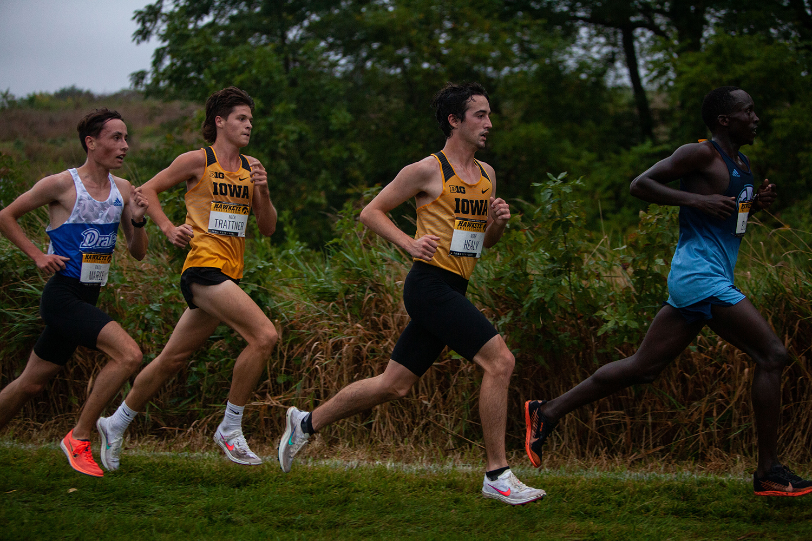

Cross Country
A couple years back I had a real passion for running. I started
cross country in 2015 and fell in love with it mostly because of where running can just take you.
Its a great sport for when you need to think by yourself or just love the to see the sunrise.
I have participated in 10, 5 kilometer races (3 Miles) and in one half marathone. I am aiming for more

Video Games
I play some video games on the side but mostly league of legends. I try to keep it at a
minimum mostly because I want to be able to do other things but overwall its a way to relax and just play for
a couple of hours with friends. Other games I love to play are World of warcraft, battfield 1, and starcraft